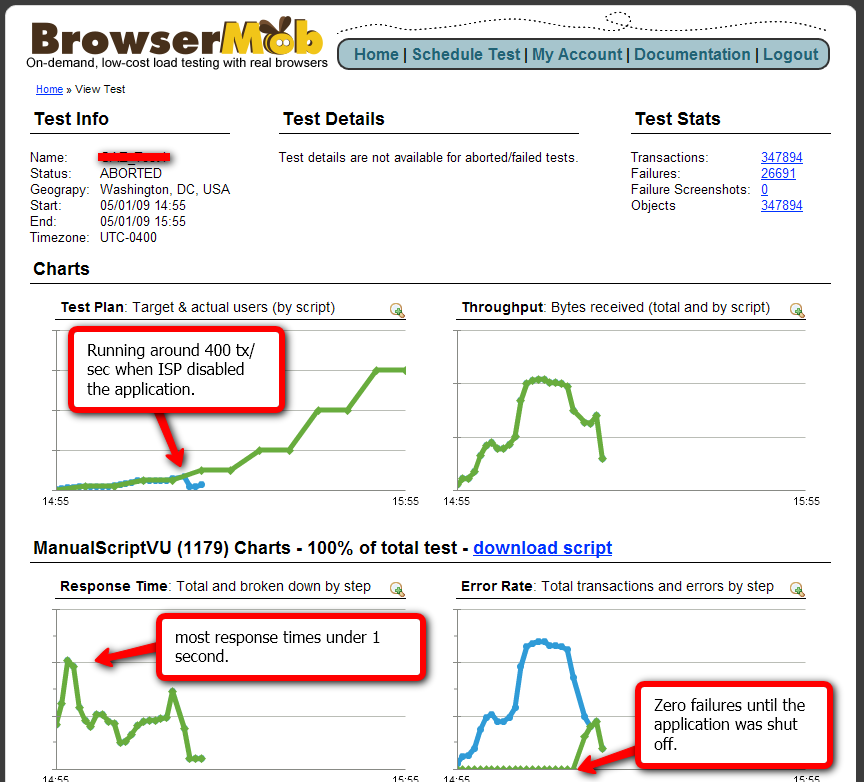
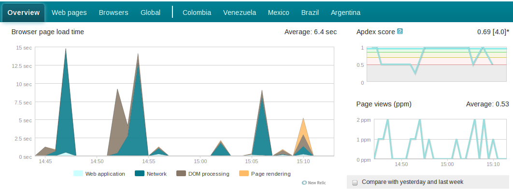
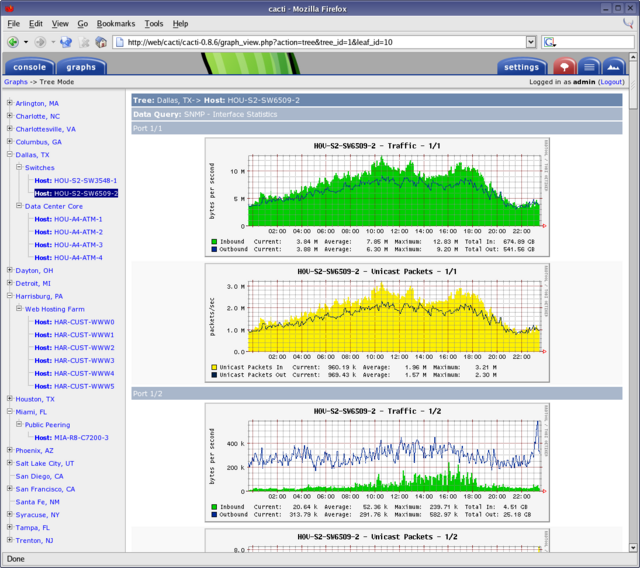
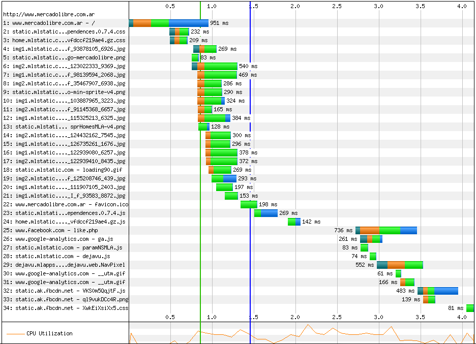
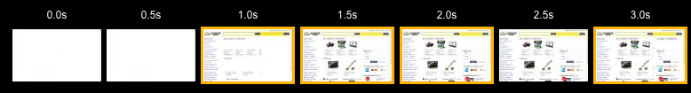

Plataformas de Lenguajes Web
MercadoLibre en números
Los números más importantes de nuestra plataforma.
-
Transacciones: Más de 50 Millones de usuarios operaron en MercadoLibre por USD3.405,9 M
-
Tráfico: 30.000 requests x segundo generan 2.5Gbits/s de tráfico.
-
Hardware: Nuestro datacenter tiene 1000 servidores físicos y un total de 6000 servidores virtuales.
-
Equipo: 1600 empleados en todo latinoamérica. Más de 300 desarrolladores. En 3 oficinas: Buenos Aires, San Luis, Silcon Valley
-
Impacto: 50.000 personas obtienen todo o la mayor parte de su ingreso de MercadoLibre.
-
11er: MercadoLibre es el 11er retailer online del mundo
Tecnologias
-
Database
- NoSQL: Redis, MongoDB, Hadoop, HBase, etc.
- Sharding: ScaleBase, DBShards
- Replicación: GoldenGate
-
Lenguajes de programación
- Dinámicos: Ruby, Node.JS, Groovy
- Estáticos: Java, C
- Scripting: Bash, Pythons
-
Caching & traffic management
- Caching: Varnish, Memcached
- Traffic Management: NGinX
Cloud services
En MercadoLibre usamos diferentes servicios en el cloud, como:
-
Github: Versionamiento de código, tanto para proyectos privados como opensource.
-
NewRelic: Monitoreo de performance de aplicaciones del lado servidor sobre plataformas ruby, java, .NET, php y python.
-
Amazon EC2: Capacidad de cómputo dinámica y adaptable.
-
Crowdin: Herramienta de traducción colaborativa.
-
Gomez: Monitoreo de performance del lado del cliente.
Agenda
-
Lenguajes
- Estáticos vs. Dinámicos.
- Sincrónicos vs. Asincrónicos.
-
Optimización de performance
-
Metodología
Lenguajes dinámicos
Son aquellos lenguajes en los que parte del comportamiento se resuelve en tiempo de ejecución.
a = new Array();
Array.prototype.mostrarCantidad = function() {
alert(this.length);
}
a.mostrarCantidad();
Ejemplos:
Lenguajes estáticos
Son aquellos lenguajes en los que la estructura de la aplicación queda fija y definida durante la compilación.
class NuevoArray extends Array {
public void mostrarCantidad() {
System.out.println(this.size());
}
}
Array a = new NuevoArray();
a.mostrarCantidad();
Ejemplos:
Comparación dinámicos vs. estáticos
- Compilación
- Tipos de datos
- Tamaño del código
Programación sincrónica
La forma en la que se lee el código es la forma en la que se ejecuta.
import httplib
conn = httplib.HTTPConnection("http://www.mercadolibre.com.ar")
conn.request("GET","/")
res = conn.getresponse()
data = res.read()
print data
Programación asincrónica
Las operaciones I/O están manejadas por eventos.
xhr = new XMLHttpRequest();
xhr.onreadystatechange = function() {
alert(xhr.responseText);
}
xhr.open('GET', 'http://www.mercadolibre.com.ar', true);
xhr.send(null);
alert('foobar');
Comparación sincrónicos vs. asincrónicos
- Sencillez en la programación
- Utilización de los recursos
Stressando el servidor
apache benchmark
$ ab -n 100 -c 10 http://www.mercadolibre.com.ar/
...
Time taken for tests: 18.878 seconds
Failed requests: 0
(Connect: 0, Receive: 0, Length: 0, Exceptions: 0)
Requests per second: 88.53 [#/sec] (mean)
Connection Times (ms)
min mean[+/-sd] median max
Connect: 185 236 84.6 205 458
Processing: 1729 3318 1608.0 2889 5996
Waiting: 193 324 275.8 239 1100
Total: 1921 3554 1580.2 3100 6196
Percentage of the requests served within a certain time (ms)
50% 3100
66% 3177
75% 5078
80% 5965
90% 6196
95% 6196
98% 6196
99% 6196
100% 6196 (longest request)
Stressando el servidor con el cloud
BrowserMob

Midiendo la performance del lado del servidor
NewRelic

Midiendo la performance del lado del servidor
Cacti

WebPageTest.org
WebPageTest.Org es un servicio gratuito que nos permite probar el funcionamiento de nuestro sitio, incluyendo descarga, ejecución y render. Desde distintos puntos geográficos y con distintos browsers.
WebPageTest.org

WebPageTest.org

Optimización de Browsers
Algunas técnicas y estrategias para optimizar la velocidad que perciben los usuarios:
-
CDN: Akamai, CloudFront.
-
HTTP Caching: Respetar los estandares de cacheo HTTP, utilizar infraestructura dedicada a aprovecharlo: Varnish/CDN.
-
Uso de multiples subdominios: Utilizar diferentes subdominios para los recursos permite aprovechar mejor el pool de conexiones del browser.
-
Compression: GZipear los contenidos: html, js, cs. No las imagenes.
-
Ajax: Minimizar el tiempo en el cual el usuario ve contenido útil, y descargar los contenidos secundarios luego.
-
Unificar recursos js/css: Es preferible una descarga grande a muchas chicas.
Metodología de trabajo en MercadoLibre
- TDD + Code Review + CI + Code Coverage

- No existe una etapa de testing ni un equipo de QA.
- La métrica de coverage es crítica y vamos subiendo gradualmente el umbral mínimo permitido para subir.
←
→
/
#